전기공사산업기사 (2005-05-29 기출문제)
1과목: 전기응용
1. 600[W]의 전열기로서 3[kg]의 물을 15[℃]로부터 100[℃]까지 가열하는데 요하는 시간[min]을 구하면? (단, 전열기의 발생열은 모두 물의 온도상승에 사용되는 것으로 생각한다.)
- 29.65
- 36.45
- 49.75
- 56.45
(정답률: 52%)

2. 형태가 복잡하게 생긴 금속제품을 균일하게 가열하는데 가장 적합한 가열방식은?
- 직접저항가열
- 유도가열
- 염욕로
- 적외선가열
(정답률: 50%)
3. 출력이 입력에 전혀 영향을 주지 못하는 제어는?
- 프로그램 제어
- 되먹임 제어
- 열린 루프제어
- 닫힌 루프제어
(정답률: 72%)
4. 불활성 가스의 아크용접에 사용하는 가스는?
- 산소
- 헬륨
- 질소
- 오존
(정답률: 74%)
5. 조명기구 중 효율이 가장 높은 것은?
- 자동차전구
- 백열전구
- 탄소아아크등
- 형광등
(정답률: 62%)
6. 다음 중 전반조명의 특색을 나타낸 것은?
- 효율이 좋다.
- 휘도가 낮다.
- 충분한 조도가 얻어진다.
- 작업시 등의 위치를 옮기지 않아도 된다.
(정답률: 74%)
7. 전기철도에서 흡상변압기를 사용하는 주된 목적은?
- 전식방지
- 통신선의 유도장해 방지
- 전차선의 부하전류 균등화
- 전차선의 전압강하율 감소
(정답률: 76%)
8. 정류방식 중 맥동율(Ripple factor)이 가장 적은 것은?
- 단상반파방식
- 단상전파방식
- 3상반파방식
- 3상전파방식
(정답률: 89%)
9. 전극재료의 구비조건이 잘못된 것은?
- 열전도율이 작고 도전율이 커서 전류밀도가 클 것
- 고온에서도 기계적 강도가 작고 열팽창률이 클 것
- 피열물과 화학작용을 일으키는 일이 적을 것
- 불순물이 적고 산화 및 소모가 적을 것
(정답률: 79%)
10. 직류 직권 전동기의 속도 제어에 사용되는 기기는?
- 듀얼 컨버터
- 사이클로 컨버터
- 초퍼
- 인버터
(정답률: 84%)
11. 기동 토크가 가장 큰 특징을 갖고 있는 전동기는?
- 직류 분권 전동기
- 단상유도 전동기
- 직류 직권 전동기
- 3상동기 전동기
(정답률: 91%)
12. 높이 10[m]의 곳에 있는 용량 100[m3]의 수조를 만수시키 는데 필요한 전력량은 몇[kwh]인가? (단, 전동기 펌프의 종합 효율은 90[%], 전손실 수두는 2[m]로 한다)
- 3.6
- 4.1
- 7.2
- 8.9
(정답률: 49%)
13. 납 축전지에서 극판이 회백색이 되고, 용량이 감퇴되는 현상은?
- 극판의 황산화
- 감극 작용
- 과도 방전
- 전해액의 농도
(정답률: 70%)
14. 완전 확산면은 어느 방향에서 보아도 무엇이 같은가?
- 광속
- 조도
- 광도
- 휘도
(정답률: 69%)
15. 전지에는 1, 2차 전지가 있다, 2차 전지는?
- 알칼리 축전지
- 망간 건전지
- 수은 전지
- 리튬 전지
(정답률: 70%)
16. 제너 다이오드는 다음 중 어느 회로에 쓰이는가?
- 일정한 전압을 얻는 회로
- 일정한 전류를 흘리는 회로
- 검파회로
- 발진회로
(정답률: 85%)
17. 열에 의한 물질의 상태변화에 대한 설명 중 틀린 것은?
- 고체를 가열하면 용융되어 액체로 된다. 이것을 융해라한다.
- 액체를 냉각시키면 고체로 된다. 이것을 응고라한다.
- 액체에 열을 가하면 기체로 된다. 이것을 기화라한다.
- 기체를 냉각시키면 액체로 된다. 이것을 승화라한다.
(정답률: 86%)
18. 시속 35[km/h]의 열차가 반경 1000[m]의 곡선궤도를 주행 할 때 고도(cant)는 몇[mm]인가? (단, 궤간은 1067[mm]이다.)
- 약 10.3
- 약 13.4
- 약 15.4
- 약 18.0
(정답률: 67%)
19. 500[lm]인 광속을 발산하는 전등 10개를 500[m2]평방인 방에 점등하였다. 그의 조명율은 0.5이고 감광보상율이 1.5라고 하면 그방의 평균조도[lx]는 얼마인가?
- 2
- 2.5
- 3.33
- 4
(정답률: 70%)
20. 복사 루미네선스 중 자극을 주는 조사가 계속되는 동안만 발광현상을 일으키는 것은?
- 형광
- 마찰
- 인광
- 파이로
(정답률: 60%)
2과목: 전력공학
21. 단일 부하의 선로에서 부하율 50%, 선로 전류의 변화 곡선의 모양에 따라 달라지는 계수 α = 0.2 인 배전선의 손실계수는 얼마인가?
- 0.⑤
- 0.15
- 0.25
- 0.30
(정답률: 18%)
22. 연가(撚架)를 하는 주된 목적에 해당되는 것은?
- 대전력을 수송하기 위하여
- 단락사고를 방지하기 위하여
- 선로정수를 평형시키기 위하여
- 페란티현상을 줄이기 위하여
(정답률: 49%)
23. 수용가를 2군으로 나뉘어서 각 군에 변압기 1대씩을 설치하고 각 군 수용가의 총 설비부하용량을 각각 30kW 및 20kW 라 하자. 각 수용가의 수용률을 0.5, 수용가 상호간의 부등률을 1.2, 변압기 상호간의 부등률을 1.3 이라 하면 고압 간선에 대한 최대부하는 몇 kVA 인가? (단, 부하역률은 모두 0.8 이라고 한다.)
- 13
- 16
- 20
- 25
(정답률: 20%)
24. 송전선로의 단락보호계전방식이 아닌 것은?
- 과전류계전방식
- 방향단락계전방식
- 거리계전방식
- 과전압계전방식
(정답률: 44%)
25. 전압과 역률이 일정할 때 전력 손실을 2배로 하면 전력은 약 몇 % 증가 시킬 수 있는가?
- 41
- 50
- 73
- 82
(정답률: 28%)
26. 차단기의 정격투입전류란 투입되는 전류의 최초 주파의 어느 값을 말하는가?
- 평균값
- 최대값
- 실효값
- 순시값
(정답률: 36%)
27. 3상3선식 송전선에서 바깥지름 20mm 의 경동연선을 2m 간격으로 일직선 수평배치로 하여 연가를 했을 때, 1km 마다의 인덕턴스는 약 몇 mH/km 인가?
- 1.16
- 1.32
- 1.48
- 1.64
(정답률: 25%)
28. 저압 뱅킹(Banking)배전방식이 적당한 곳은?
- 농촌
- 어촌
- 부하 밀집지역
- 화학공장
(정답률: 44%)
29. 늦은 역률의 부하를 갖는 단거리 송전선로의 전압강하의 근사식은? (단, P는 3상부하전력[kW], E 는 선간전압[kV], R 은 선로 저항[Ω], X는 리액턴스[Ω], θ는 부하의 늦은 역률각이다.)
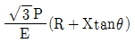
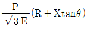
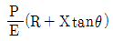
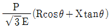
(정답률: 23%)
30. 주파수 60Hz, 정전용량 1/6π[㎌]의 콘덴서를 Δ결선해서 3상 전압 20000V 를 가했을 경우의 충전용량은 몇 kVA인가?
- 12
- 24
- 48
- 50
(정답률: 35%)
31. 수차발전기가 난조를 일으키는 원인은?
- 발전기의 관성 모멘트가 크다.
- 발전기의 자극에 제동권선이 있다.
- 수차의 속도 변동률이 적다.
- 수차의 조속기가 예민하다.
(정답률: 38%)
32. 피뢰기가 방전을 개시할 때의 단자전압의 순시값을 방전 개시전압이라 한다. 방전 중의 단자전압의 파고값은 무슨 전압이라고 하는가?
- 뇌전압
- 상용주파교류전압
- 제한전압
- 충격절연강도전압
(정답률: 36%)
33. 공기차단기에 비교한 SF6 가스차단기의 특징으로 틀린 것은?
- 절연내력이 공기의 2 ∼ 3배이다.
- 밀폐구조이므로 소음이 없다.
- 소전류 차단시 이상전압이 높다.
- 아크에 SF6가스는 분해되지 않고 무독성이다.
(정답률: 36%)
34. 용량형 전압변성기 CPD 의 장점이 아닌 것은?
- 공진을 이용하므로 주파수 특성이 좋다.
- 절연 내량이 커서 계전기와 공용할 수 있다.
- 절연의 신뢰도가 높다.
- 고장이 나더라도 값싼 예비품으로 신속히 수리가 가능하다.
(정답률: 20%)
35. 우리나라 양수발전소의 입력은 주로 어떤 발전소에서 담당하는가?
- 원자력발전소 및 화력 대용량 발전소
- 소수력발전소
- 열병합발전소
- MHD발전소
(정답률: 35%)
36. 계통의 기기 절연을 표준화하고 통일된 절연 체계를 구성하는 목적으로 절연계급을 설정하고 있다. 이 절연계급에 해당하는 내용을 무엇이라 부르는가?
- 제한전압
- 기준충격절연강도
- 상용주파 내전압
- 보호계전
(정답률: 32%)
37. 가스차단기(GCB)의 보호장치가 아닌 것은?
- 가스압력계
- 가스밀도검출계
- 조작입력계
- 가스성분표시계
(정답률: 42%)
38. 증기터빈의 팽창 도중에서 증기를 추출하는 형태의 터빈은?
- 복수터빈
- 배압터빈
- 추기터빈
- 배기터빈
(정답률: 21%)
39. 안정권선(△권선)을 가지고 있는 대용량 고전압의 변압기에서 조상용 전력용콘덴서는 주로 어디에 접속되는가?
- 주변압기의 1차
- 주변압기의 2차
- 주변압기의 3차(안정권선)
- 주변압기의 1차와 2차
(정답률: 30%)
40. 단위길이당 인덕턴스 및 커패시턴스가 각각 L 및 C 일 때 고주파 전송선로의 특성임피던스는?
- L/C
- C/L
- √C/L
- √L/C
(정답률: 34%)
3과목: 전기기기
41. 1차전압 2200[V], 무부하전류 0.088[A] 인 변압기의 철손이 110[W]이다. 이때 자화전류[A]는?
- 0.0724
- 0.1012
- 0.195
- 0.3715
(정답률: 18%)
42. 극수 P의 3상 유도전동기가 주파수 f[Hz], 슬립 S, 토크 T[N-m]로 운전하고 있을 때 기계적 출력[W]은?
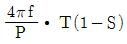
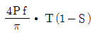
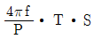
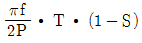
(정답률: 30%)
43. 출력이 10[KW] 인 농형 유도전동기의 기동에 가장 적당한 방법은?
- 저항 기동
- 직접 기동
- Y - △ 기동
- 기동 보상기에 의한 기동
(정답률: 34%)
44. 전기자 도체수 360, 극당 자속 0.⑤[Wb]인 10극 중권 직류전동기가 있다. 전기자 전류가 20[A]일 때 발생토크[N·m]는?
- 31.53
- 43.28
- 57.32
- 61.45
(정답률: 31%)
45. 정격 150[KVA], 철손1[KW], 전부하 동손이 4[KW]인 단상 변압기의 최대 효율[%]과 최대 효율시의 부하[KVA]를 구하면?.
- 96.8[%], 125[KVA]
- 97.4[%], 75[KVA]
- 97[%], 50[KVA]
- 97.2[%], 100[KVA]
(정답률: 22%)
46. 직류분권전동기 운전 중 계자권선의 저항을 증가할 때 회전속도는?
- 일정하다.
- 감소한다.
- 증가한다.
- 관계없다.
(정답률: 28%)
47. 직류전동기의 속도제어 방법 중 광범위한 속도제어가 가능하며, 운전효율이 가장 좋은 방법은?
- 계자제어
- 직렬저항제어
- 병렬저항제어
- 전압제어
(정답률: 39%)
48. 단락비가 1.3인 3상 동기 발전기의 정격전류가 50[A]이다. 정격전압 1,000[V], 역율 90[%]에서의 정격출력[kW]을 구하면?
- 75.6
- 77.9
- 85.7
- 93.8
(정답률: 20%)
49. 동기기의 난조 방지에 가장 적절한 대책은?
- 제동권선 설치
- 동기리액턴스 증가
- 회전자 관성 증가
- 자극 수 증가
(정답률: 48%)
50. 사이클로 컨버터 (Sycloconverter) 란?
- 직류제어 소자이다.
- 전류제어 장치이다.
- 실리콘 양방향성 소자이다.
- 제어 정류기를 사용한 주파수 변환기이다.
(정답률: 26%)
51. 변압기의 부하전류 및 전압이 일정하고 주파수가 낮아지면?
- 철손증가
- 철손감소
- 동손증가
- 동손감소
(정답률: 27%)
52. 변압기의 효율이 가장 좋을 때의 조건은?
- 철손 = 동손
- 철손 = 1/2동손
- 1/2철손 = 동손
- 철손 = 2/3동손
(정답률: 46%)
53. 유도 전동기의 토크와 전동기에 가해지는 단자 전압과의 관계에서 가장 올바른 것은?
- 토크는 단자 전압에 비례한다.
- 토크는 단자 전압과 무관하다.
- 토크는 단자 전압의 세제곱에 비례한다.
- 토크는 단자 전압의 제곱에 비례한다.
(정답률: 33%)
54. 동기 발전기의 부하에 콘덴서를 설치하여 앞서는 전류가 흐르고 있다. 옳은 것은?
- 단자 전압 강하
- 단자 전압 상승
- 편자 작용
- 속도 상승
(정답률: 20%)
55. 소형 공구 및 가전제품에 일반적으로 널리 이용되는 전동기는?
- 교류 서보 전동기
- 히스테리시스 전동기
- 영구자석 스텝전동기
- 단상 직권정류자 전동기
(정답률: 43%)
56. 운전 중 계기용 변류기(CT)의 고장 발생으로 변류기를 개방시 2 차측을 단락하는 가장 큰 이유는?
- 1 차측의 과전류 방지
- 2 차측의 과전류 보호
- 2 차측의 절연 보호
- 계기의 측정 오차 방지
(정답률: 36%)
57. 직류기의 전기자 권선법 중 파권의 이점은?
- 효율이 크게 좋아진다.
- 전압이 작아진다.
- 전압이 높아진다.
- 출력이 증가한다.
(정답률: 25%)
58. 제어계통에는 유도전동기의 변형이 많이 사용되고 있다. 이와 같은 계통에서 작은 회전력 또는 운동을 전기적으로 전송키 위한 자동 동기화 기계가 아닌 것은?
- 송량기 장치
- 자기 동기장치
- 동기 연계장치
- 자동 동기장치
(정답률: 43%)
59. 3상 직권 정류자 전동기에 중간(직렬)변압기가 쓰이고 있는 이유가 아닌 것은?
- 정류자 전압의 조정
- 회전자 상수의 감소
- 경부하때 속도의 이상 상승방지
- 실효 권수비 선정 조정
(정답률: 23%)
60. 동기기의 안정도 증진법은 다음 중 어느 것인가?
- 동기화 리액턴스를 작게 할 것
- 회전자의 플라이휠 효과를 작게 할 것
- 역상, 영상 임피던스를 작게 할 것
- 단락비를 작게 할 것
(정답률: 27%)
4과목: 회로이론
61. 회로에서 인덕턴스 L을 변화시킬 때 일정교류 기전력에 대한 전전류 I의 궤적은?
- 원점을 통하지 않는 반원이 된다.
- 원점을 통하는 반원이 된다.
- 직선도 아니고 원도 아니다.
- 원점을 통하지 않는 직선이 된다.
(정답률: 24%)
62. 기본파의 40[%]인 제 3고조파와 30[%]인 제5고조파를 포함 하는 전압파의 왜형률은?
- 0.3
- 0.5
- 0.7
- 0.9
(정답률: 40%)
63. 각 상 전압이 Va=40sinωt, Vb=40sin(ωt+90°), Vc=40sin(ωt-90°) 이라 하면 영상 대칭분의 전압은?
- 40/3cosωt
- 40/3sinωt
- 40/3sin(ωt-90°)
- 40/30cos(ωt+90°)
(정답률: 40%)
64. 저항 R=6[Ω]과 유도리액턴스 XL=8[Ω]이 직렬로 접속된 회로에서 v=200√2sinωt [V]인 전압을 인가하였다. 이 회로의 소비되는 전력[KW]은?
- 3.2
- 2.2
- 1.2
- 2.4
(정답률: 32%)
65. 상호 인덕턴스 100[mH]인 회로의 1차 코일에 3[A]의 전류가 0.3초 동안에 18[A]로 변화할 때 2차 유도 기전력[V]은?
- 5
- 6
- 7
- 8
(정답률: 30%)
66. 그림의 회로에서 a-b 사이의 전압 Eab 값은?
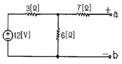
- 8[V]
- 10[V]
- 12[V]
- 14[V]
(정답률: 40%)
67. 상순이 a, b, c인 불평형 3상 전류 Ia, Ib, Ic의 대칭분을 Ia0, Ia1, Ia2라 하면 이때 대칭분과의 관계식 중 옳지 못한 것은?
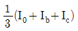
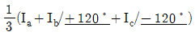
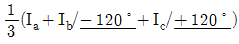
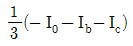
(정답률: 35%)
68.
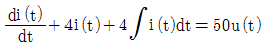
를 라플라스 변환하여 풀면 전류는? (단, t=0에서 이다- 50e2t(a+t)
- et(1+5t)
- 1/4(1-et)
- 50tr-2t
(정답률: 21%)
69. 정전 콘덴서에 축적되는 에너지와 전위차와의 관계는?
- 직선
- 타원
- 포물선
- 쌍곡선
(정답률: 28%)
70. 임피던스 함수가 Z(s)=3S+3/S으로 표시되는 2단자 회로망은?
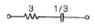
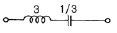
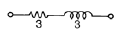
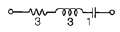
(정답률: 30%)
71. T 회로에서 단자
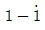
에서 본 구동점 임피던스 Z11은?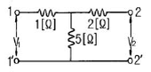
- 1[Ω]
- 2[Ω]
- 5[Ω]
- 6[Ω]
(정답률: 33%)
72. 저항 R, 리액턴스 X의 직렬회로에서
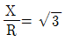
일 때의 회로의 역률은?- 1/√3
- 1/2
- 2/√3
- √3
(정답률: 16%)
73. R. L. C 병렬 공진회로에 관한 설명 중 옳지 않은 것은?
- 공진시 입력 어드미턴스는 매우 작아진다.
- 공진 주파수 이하에서의 입력전류는 전압보다 위상이 뒤진다.
- R가 작을 수록 Q가 높다.
- 공진시 L 또는 C 를 흐르는 전류는 입력전류 크기의 Q 배가 된다.
(정답률: 20%)
74. 어떤 회로에 e=50 sin(ωt+θ)[V]를 인가했을 때 i=4sin(ωt+θ-30°)[A]가 흘렀다면 유효 전력[W]은?
- 50
- 57.7
- 86.6
- 100
(정답률: 34%)
75.
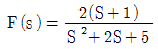
의 시간함수 f(t)는 어느 것인가?- 2e-tcos2t
- 2etcos2t
- 2e-tsin2t
- 2etsin2t
(정답률: 22%)
76. 1차 지연 요소의 전달함수는?
- K
- K/S
- KS
- K/1+Ts
(정답률: 35%)
77. 단위충격함수(unit impulse function) δ(t)의 라프라스변환은?
- 0
- -1
- ∞
- 1
(정답률: 35%)
78. 내부 임피던스가 순저항 6[Ω]인 전원과 120[Ω]의 순저항부하 사이에 임피던스 정합을 위한 이상변압기의 권선비는?
- 1/√20
- 1/√2
- 1/20
- 1/2
(정답률: 23%)
79. R=15[Ω], XL=12[Ω], XC=30[Ω]가 병렬로 접속된 회로에 120[V]의 교류전압을 가하면 전원에 흐르는 전류와 역률은 각각 얼마인가?
- 22[A], 85[%]
- 22[A], 80[%]
- 22[A], 60[%]
- 10[A], 80[%]
(정답률: 23%)
80. 저항 R, 인덕턴스 L, 콘덴서 C의 직렬회로에서 발생되는 과도현상이 비진동적이 되는 조건은? (직류전압인가시)
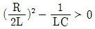
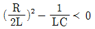
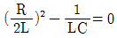
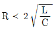
(정답률: 26%)
5과목: 전기설비
81. 사용전압이 35000V 이하인 특별고압 가공전선이 건조물과 제2차 접근상태로 시설된 경우의 기준으로 틀린 것은?
- 특별고압 가공전선로는 제2종 특별고압 보안공사로 시설한다.
- 특별고압 가공전선과 건조물과의 이격거리는 3m 이상으로 시설한다.
- 특별고압 가공전선으로 케이블을 사용하여 건조물의 상부조영재에서 위쪽에 시설하는 경우, 건조물과 조영재사이의 이격거리는 1.2m 이상으로 시설한다.
- 지지물로 사용하는 목주의 풍압하중에 대한 안전률은 1.5 이상으로 한다.
(정답률: 21%)
82. 저압전로에서 그 전로에 지기가 생긴 경우에 0.5초 이내에 자동적으로 차단하는 장치를 시설하는 때에는 제3종 접지공사의 접지 저항값을 몇 Ω까지 허용할 수 있는가? (단, 자동차단기의 정격감도전류는 30mA 이다.)
- 10
- 100
- 300
- 500
(정답률: 26%)
83. 가공전선로의 지지물에 시설하는 통신선 또는 이에 직접 접속하는 가공통신선이 철도를 횡단하는 경우에는 궤조면 상 몇 m 이상으로 설치하여야 하는가?
- 4.5
- 5.5
- 6.5
- 7.5
(정답률: 34%)
84. 동기조상기를 시설하는 경우에 반드시 시설되지 않아도 되는 장치는?
- 동기조상기의 역률 계측장치
- 동기조상기의 전류 계측장치
- 동기조상기의 전압 계측장치
- 동기조상기의 베어링 및 고정자의 온도 계측장치
(정답률: 32%)
85. 직류식 전기철도용 전차선로의 절연부분과 대지간의 절연 저항은 사용전압에 대한 누설전류가 연장 1km 마다 강체조가식을 제외한 가공 직류 전차선은 몇 mA 를 넘지 않도록 유지하여야 하는가?
- 10
- 100
- 150
- 200
(정답률: 19%)
86. 380V 동력용 옥내배선을 전개된 장소에서 애자사용 공사로 시공할 때 전선간의 간격은 몇 ㎝ 이상이어야 하는가? (단, 전선은 절연전선을 사용한다.)
- 2
- 4
- 6
- 8
(정답률: 21%)
87. 과전류 차단기로 저압전로에 사용하는 배선용 차단기의 정격전류가 30A인 경우 정격전류의 2배의 전류를 통한경우 자동 동작되어야 할 시간의 한계는?
- 2초
- 30초
- 1분
- 2분
(정답률: 20%)
88. 전력계통의 운용에 관한 지시를 하는 곳은?
- 발전소
- 변전소
- 급전소
- 개폐소
(정답률: 32%)
89. 고압 가공전선로의 가공지선으로 나동복강선을 사용할 경우 지름 몇 ㎜ 이상의 것을 사용하여야 하는가?
- 2.0
- 2.5
- 3.0
- 3.5
(정답률: 13%)
90. 스러스트 베어링의 온도가 현저히 상승하는 경우, 자동적으로 이를 전로로부터 차단하는 장치를 시설하여야 하는 수차발전기의 용량은 최소 몇 kVA 이상인 것인가?
- 500
- 1000
- 1500
- 2000
(정답률: 18%)
91. 옥내에 시설하는 전동기에 과부하 보호장치의 시설을 생략할 수 없는 경우는?
- 전동기가 단상의 것으로 전원측 전로에 시설하는 과전류 차단기의 정격전류가 15A 이하인 경우
- 전동기가 단상의 것으로 전원측 전로에 시설하는 배선용 차단기의 정격전류가 20A 이하인 경우
- 타인이 출입할 수 없고 전동기 운전 중 취급자가 상시 감시할 수 있는 위치에 시설하는 경우
- 전동기의 정격출력이 0.75kW 인 전동기
(정답률: 40%)
92. 중성선 다중접지식의 것으로 전로에 지기가 생긴 경우에 2초안에 자동적으로 이를 차단하는 장치를 가지는 22.9kV 가공 전선로에서 1㎞ 마다의 중성선과 대지간의 합성전기 저항값은 몇 Ω이하이어야 하는가?
- 10
- 15
- 20
- 30
(정답률: 27%)
93. 전압조정기의 내장권선을 이상전압으로부터 보호하기 위하여 특히 필요한 경우에는 그 권선에 제 몇 종 접지공사를 하여야 하는가?
- 제1종
- 제2종
- 제3종
- 특별 제3종
(정답률: 25%)
94. 지선의 시설목적으로 합당하지 않은 것은?
- 유도장해를 방지하기 위하여
- 지지물의 강도를 보강하기 위하여
- 전선로의 안전성을 증가시키기 위하여
- 불평형 장력을 줄이기 위하여
(정답률: 24%)
95. 가공 전선로의 지지물에는 취급자가 오르 내리는데 사용하는 발판못 등은 특별한 경우를 제외하고 지표상 몇 m 미만에는 시설하지 않아야 하는가?
- 1.0
- 1.5
- 1.8
- 2.0
(정답률: 45%)
96. 시가지에 시설하는 특별고압 가공전선로용 지지물로 사용 하지 않아야 하는 것은?
- 철근 콘크리트주
- 목주
- 철탑
- 철주
(정답률: 40%)
97. 가반형의 용접전극을 사용하는 아크 용접장치의 용접변압기의 1차측 전로의 대지전압은 몇 V 이하이어야 하는가?
- 220
- 300
- 380
- 440
(정답률: 41%)
98. 고압 가공전선로의 지지물로는 A종 철근콘크리트주를 사용하고, 전선으로는 단면적 22mm2 의 경동연선을 사용한다면 경간은 최대 몇 m 이하이어야 하는가?
- 150
- 250
- 300
- 500
(정답률: 12%)
99. 흥행장의 저압 전기설비공사로 무대, 무대 마루 밑, 오케스트라 박스, 영사실 기타 사람이나 무대 도구가 접촉할 우려가 있는 곳에 시설하는 저압 옥내배선, 전구선 또는 이동전선은 사용전압이 몇 V 미만이어야 하는가?
- 100
- 200
- 300
- 400
(정답률: 32%)
100. 합성수지관공사에 의한 저압 옥내배선에 대한 설명으로 옳은 것은?
- 합성수지관 안에 전선의 접속점이 있어도 된다.
- 전선은 반드시 옥외용 비닐절연전선을 사용한다.
- 지름 2.6mm 의 경동선은 사용할 수 있다.
- 관의 지지점간의 거리는 3m 이하로 한다.
(정답률: 26%)